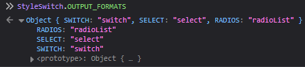
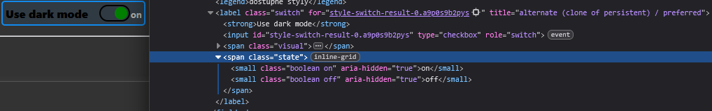
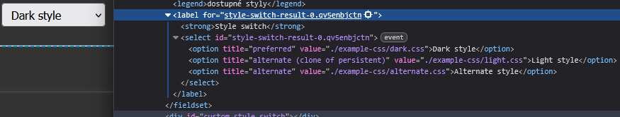
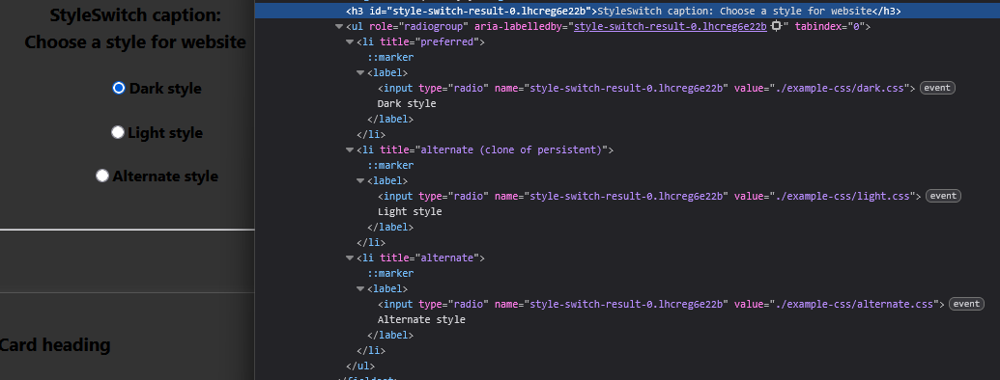

1.3style-switch.mjsRpa2BKQqJqlPjk3P8BRONSt36Bb+B4IAlK5aWV1u/xg=A switch for different CSS styles on web pages.
There are plenty of light/dark theme style switchers, so why make another one?
If you want the fastest possible setup, add a container for the widget and include the module:
<script src="./style-switch.mjs?v=1.3" type="module" integrity="sha256-Rpa2BKQqJqlPjk3P8BRONSt36Bb+B4IAlK5aWV1u/xg="></script>
This already does the core work:
The widget itself only stores the preference. To apply the chosen style after reloads or on other pages, you also need a cookie listener or a server-side implementation.
StyleSwitch combines three common approaches:
prefers-color-scheme,That combination makes it possible to switch styles without a full page reload and to keep the selection across pages.
Let's start chronologically: first there was Alternative style sheets (https://html.spec.whatwg.org/multipage/links.html#rel-alternate), which is supported by all browsers, but only Firefox has a built-in switch for it where you can change the style directly in the browser (if you have Firefox, use ALT > View > Page Style). The HTML markup looks like this:
<link rel="stylesheet" href="./css/light.css" fetchpriority="high"><!-- persistent -->
<link rel="stylesheet" href="./css/dark.css" title="dark style"><!-- preferred -->
<link rel="alternate stylesheet" href="./css/alternate.css" title="alternative style" fetchpriority="low"><!-- alternate -->
The example includes modern fetchpriority attributes, which help here because "persistent" styles are always loaded and always needed, while "alternate" styles are not used at all (unless you have Firefox and use the built-in switch, or unless you do some magic in JavaScript, which we will get to later), so fetchpriority="low" is enough. All styles are downloaded, even those that are not used, including alternate ones. Therefore it is better to have one "persistent" file and modify it in the others, instead of several separate files containing all the styles. Purely for saving data... users do not need to download unnecessary data even today, and it is still better to save bandwidth.
This simple solution is sufficient for style switching in Firefox, but support in only one browser is not the last problem you will encounter. Another drawback is that when navigating to another page, the chosen style is not preserved and the default style is loaded again. In short, this solution is practically unusable on its own, and further work is needed.
The second way to switch styles came with Media Queries Level 5, prefers-color-scheme (https://drafts.csswg.org/mediaqueries-5/#prefers-color-scheme). It is a very pleasant and easy option. Essentially it takes the value from the operating system, whether dark or light mode is used, passes that value to the browser, which then applies dark or light mode accordingly, and finally the browser passes that value to the page, which does something with it. Note, however, that the browser can set a theme different from the operating system. A change in the OS theme is not necessarily inherited by the browser, and the browser will not pass the change to the page. Nevertheless, the default behavior is to inherit the color scheme from the OS. There are many possible uses, but I will show a simple and fairly manageable option:
<link rel="stylesheet" href="./css/light.css" fetchpriority="high"><!-- persistent -->
<link rel="stylesheet" href="./css/dark.css" title="dark style" media="(prefers-color-scheme: dark)"><!-- preferred -->
The example works like this in practice: ./css/light.css is downloaded and used always, while ./css/dark.css is used only when the media condition is met, that is, when dark mode is enabled. In the individual files you ideally use variables. File light.css:
:root {
--color-accent: #118bee15;
--color-secondary-accent: #920de90b;
/* ... and more */
}
article aside {
background: var(--color-secondary-accent);
/* ... and more */
}
/* ... and so on, all CSS rules are here */
and file dark.css:
:root {
--color-accent: #0097fc4f;
--color-secondary-accent: #e20de94f;
/* ... and more */
}
/* end of file, nothing more than root is needed */
In this case, the variables from the root in the second file (./css/dark.css) will take precedence over the variables from the first file, and thus you easily achieve different colors for the site's dark mode. As mentioned, there are many ways to use prefers-color-scheme. I like this one; it is very simple, not too redundant, and the values for the dark style are stored in their own file. In my example the default style is light and dark is optional, but of course it can also work the other way around. There is no need to store the chosen value anywhere; the user decides whether they want a light or dark style through their operating system settings. And that brings the related problem.
Then the user's choice must be stored, and this stored choice must take precedence over the evaluation of media="(prefers-color-scheme: ...)". Typically a cookie is used, and in fact it is possible to store this kind of operational cookie even if you do not have the user's consent for marketing and analytics cookies, because such a cookie cannot be used to track the user. Of course, if you do everything correctly, you cannot use session data, you cannot use any random data in the name or content, and everything must be transparent so it is clear that the content cannot be used for tracking the user.
And if a cookie is active, for example stating that the user wants dark style, dark style needs to be enabled and the media="(prefers-color-scheme: ...)" condition ignored, therefore that attribute must be removed. The same goes for the title attribute; that is important, because it changes the "preferred" style into "persistent" and it is loaded always. Since it is placed in the code after the light style, it will always take precedence and the result will always be dark.
Nothing would need to be removed at all if the media="..." evaluation happened to be true, but then I would have to detect whether that is the case or not. That cannot be done on the server side, and on the client side it may already be too late; it can be done in JavaScript, but faster and easier is to not detect anything and simply remove the media and title attributes always.
Yes, it is possible, it only requires one small addition. I will show it in code:
<link rel="stylesheet" href="./css/light.css" fetchpriority="high"><!-- persistent -->
<link rel="stylesheet" href="./css/dark.css" title="dark style" media="(prefers-color-scheme: dark)"><!-- preferred -->
<link rel="alternate stylesheet" href="./css/alternate.css" title="alternative style" fetchpriority="low"><!-- alternate -->
<link rel="alternate stylesheet" href="./css/light.css" title="main light style"><!-- alternate -->
You can notice that this creates duplication: the light style ./css/light.css is written twice. Once as "persistent", and again as "alternate" with a title attribute containing what will appear in Firefox's dropdown menu under View > Page Style (described above). This exists only because of the style switcher in Firefox's context menu, and since it is a feature only for Firefox users and only for those who know and use it... it is therefore a feature for fractions of a per mille. Why bother with it at all? Well, outside Firefox this behavior is part of the standard, and it is not too much trouble to deal with this duplication. The file is not downloaded again or anything like that; it is only a few dozen bytes of
transferred text. If you also use HTTP compression (content-encoding: gzip), you reduce the duplicate transferred data to just a few bytes. It is really only the content of the title attribute. It's not a big deal, and I am happy to provide it to the six users in the world who use it :) .
But the main thing is... now we have a working combination of Alternative style sheets and prefers-color-scheme, without any complicated JavaScript polyfills or browser plugins. Dark and light styles switch automatically according to the operating system setting, and at the same time Firefox users can manually switch styles from the browser context menu.
Firefox can switch styles, but it cannot remember the chosen value when navigating between different pages. The operating system can switch the choice, but it supports only two options, light and dark. Also, using the OS alone it is not possible to have a different color style for the page than for the OS itself. This already requires a switch element on the web page. You can make a switch as a form that sends the value to a backend where a server script changes the page style, but that requires a page reload. I therefore prefer a JavaScript solution, which allows recoloring the page without reloading it.
A script capable of:
Minimal working usage:
<script src="./style-switch.mjs?v=1.3" type="module" integrity="sha256-Rpa2BKQqJqlPjk3P8BRONSt36Bb+B4IAlK5aWV1u/xg="></script>
Only pure javascript with TypeScript annotations, no other dependencies, libraries, frameworks or anything like that. TypeScript what? It's only about annotations, automatic tools can mark this class as a TypeScript library, but it's not true, just an autodetection failure, the script itself is pure javascript, only the annotations, interfaces, variable types described by TypeScript, ...
... and that is all; this one line is enough for full functionality, the script finds the styles used on the page and builds a switch from them. Note that the switch only stores the appropriate cookie, and additional processing is needed for that cookie, whether server-side or JavaScript.
I mentioned cookies, so let's describe it:
The default cookie name is stylesheets and it is stored for one year (all of this can be changed in settings, both the cookie name and how long it is retained). Inside the cookie is JSON, which has the following jsDoc annotation:
/** @type {Object.<string, {disabled: boolean, byNakedDay?: boolean}>} */
The object is then converted to a JSON string, and with concrete values it may look like this:
{
"./example-css/dark.css": { "disabled": false },
"./example-css/light.css": { "disabled": true },
"./example-css/alternate.css": { "disabled": true }
}
So there are file paths exactly as they are written in the HTML document (the script does not convert paths to absolute, relative, or anything else; they stay as they appear in the href attribute of the link element).
And what it means is quite clear: disabled is used the same way as the disabled attribute on a link element. So true means disabled and the style is not applied, while disabled: false means the style is active and used.
Alternatively:
{
"": { "disabled": false, "byNakedDay": true },
"./example-css/dark.css": { "disabled": true }
}
This is a special cookie case indicating that all page styles are turned off and the page is displayed without CSS. This automatically turns off after the Css Naked Day event ends, that is April 9 every year. This is disabled by default in StyleSwitch; if you do not enable it manually, you do not have to deal with this part at all. But if you want to enable it and have all CSS files automatically disabled on April 9 to show your site naked, it can be turned on with the option:
nakedStyle: {
use: true,
celebrateNakedDay: {
switchAutomatically: true
}
},
Let's now look at how to configure the StyleSwitch library concretely:
There are 2 options, and for both the same applies: you only fill in the parts of the settings you want to change; if you do not mention them, the default settings are used. You can find the default settings from the static read-only method StyleSwitch.DEFAULT_SETTINGS. For clarity, that variable contains the default settings, not the current instance settings.
What JSON element? This is a simplified term for script type="application/json", or script type="text/json" (even though this syntax is deprecated, it still works). It is important to know that script type="application/json" is treated by the browser as ordinary text, not as executable script! That means it does not block page rendering while the script runs; on the contrary, it has no effect on page rendering.
The important attribute here is id with the value style-switch-settings. The script looks for the element with that id. Since the script itself is a module (type="module"), it does not matter where in the page the JSON element is placed, whether in the header or at the end of the body.
Example:
<script type="application/json" id="style-switch-settings">
{
"nakedStyle": {
"use": true
},
"texts": {
"caption": "Choose a style for website"
}
}
</script>
<script src="./style-switch.mjs?v=1.3" type="module" crossorigin="anonymous" integrity="sha256-Rpa2BKQqJqlPjk3P8BRONSt36Bb+B4IAlK5aWV1u/xg="></script>
(In this example I allow the page to have no CSS as one of the possible styles, and I overwrite the widget caption. The other settings remain default as shown in StyleSwitch.DEFAULT_SETTINGS.)
The second option is to place them in the HTTP GET parameter named settings. (You can find the parameter name from the static read-only method StyleSwitch.SETTINGS_URL_PARAMETER.) The value must be JSON-escaped, for example with JSON.stringify().
The important return value is stored in the result variable. That variable is either null (if the widget was not created, for example when the page contains no styles) or an HTMLElement, which can then be inserted into any part of the page, as shown below. The function is asynchronous, so you must wait for the result using await or Promise.
Example:
<script type="module">
const { StyleSwitch, result } = await import( './style-switch.mjs?v=1.3&settings=' + JSON.stringify( {
nakedStyle: {
use: true,
},
texts: {
caption: 'StyleSwitch caption',
},
resultSnippetAppearance: {
outputFormat: 'select',
reverseOrder: true
}
} ) );
/** @type {HTMLElement|null} */
const customStyleSwitchElement = document.getElementById( 'custom-style-switch' );
if ( customStyleSwitchElement && result && result instanceof HTMLElement )
{
customStyleSwitchElement.appendChild( result );
}
</script>
(The settings are similar to the previous case, plus some changes in the appearance of the widget... specifically, a swap (input type="checkbox") is used if there are only two styles to switch between, otherwise a select is used.)
Option 1 is slightly less resource-intensive, but the difference is minimal. The two configuration methods cannot be combined; choose one or the other.
styleLinksQSA(string) The value for document.querySelectorAll() used to load styles. You probably will not need to change the default.
rootElementQS(string) The value for document.querySelector() returning the element into which the widget created by this script will be inserted.
cookie(object) Settings for the cookie used to store the user-selected site style.
texts(object) All text labels for the widget.
nakedStyle(object) Allows you to add a CSS-free style as one of the usable page display styles, the so-called naked style. The object details are:
bool) use use or do not use the naked style.object) celebrateNakedDay:
bool) switchAutomatically automatically enable and then disable the naked style on the specified date.number) monthNumber the month number of Naked Day (months start at 0, so January is 0)number) dayNumber the day number within the month.resultSnippetAppearance(object) All settings for the appearance and behavior of the resulting widget that this script creates and returns in the return object. Details are:
string) idPrefix prefix for the widget's id. A random string is appended so the id becomes unique and the widget can be used more than once in the document if needed.string) defaultResultSnippetElement type of element that will wrap the resulting widget.string) outputFormat list of possible form controls that the script will create as output. This list can be obtained from the static read-only method StyleSwitch.OUTPUT_FORMATS, 
the options are:switch (input type=checkbox), possible only if there are exactly two possible page styles, for example dark and light. 
select (default) 
radioList … a list of input type=radio items 
string) preferredColorSchemeChangeBehavior default behavior of the widget when the operating system color scheme changes. The widget can dynamically change the page style immediately when the OS value changes, if that is desirable. For example, if the user has already chosen a site style, they likely do not want it to change. Therefore the default behavior is to change dynamically only when there is no cookie and the user has not yet chosen the page style. All options can be obtained from the static read-only method StyleSwitch.PREFERRED_COLOR_SCHEME_CHANGE_BEHAVIOR. They are:
never never change the page style in response to an OS color scheme change.always always change the page style when the OS color scheme changes. In other words, it takes precedence even over a previously chosen user style! The user-chosen style will change.onlyWithoutCookie (default) when the OS color scheme changes, the page style changes only if the user has not yet chosen which page color style to use.bool) reverseOrder output the styles found in the document head in reverse order?object) switch all settings for the 'switch' widget
bool) useRolesAsTitle use the detected style role as the title attribute of the switch control?string) labelClassName class name attribute for the wrapper element of the resulting widget.string) captionElementName element name for the title of the resulting switch widget. Only inline elements are supported, not block elements!string) visualSwitchClassName class name attribute for the visual switch element of the resulting widget.string) stateClassName class name attribute for the element displaying the switch state (default "on" / "off" ... can be changed to any text)string) statusElementName element name for the element displaying the switch state. Only inline elements are supported, not block elements!object) select all settings for the 'select' widget
bool) useRolesAsTitle use the detected style role as the title attribute for the option inside the select?string) captionElementName element name for the title of the resulting select widget.object) radioList all settings for the 'radioList' widget
bool) useRoleAsItemTitle use the detected style role as the title attribute for the input?string) captionElementName element name for the title of the resulting radio list widget.autoRun(bool) Run the script automatically after import or insertion into the document? The default setting is yes, and you will usually use this default. Only the custom run function assembly use case makes autorun not make sense.
Various options mostly for advanced users.
If you want to make more extensive modifications to the class, it is possible using a custom assembly, which can look like this:
<script type="module">
const { StyleSwitch, result } = await import( './style-switch.mjs?v=1.3&settings=' + JSON.stringify( {
autoRun: false,
nakedStyle: {
use: true,
},
} ) );
const s = new StyleSwitch();
s.checkRequirements();
s.prepareRootElement();
/** @type {{currentlyActivatedPath: String|null, byNakedDay: Boolean}} */
const { currentlyActivatedPath, byNakedDay } = await s.getCurrentlyActivatedStyleSheetsPath();
/** @type {Array.<{role: 'preferred' | 'alternate' | 'alternate (clone of persistent)', reference: ?HTMLLinkElement}>} */
const interestStyleSheets = s.getCleanedStyleSheetsObject(); // without duplicates and persistent styleSheets
s.celebrateNakedDay( interestStyleSheets );
s.cancelNakedDay( byNakedDay );
s.createSelect( interestStyleSheets, currentlyActivatedPath );
/** @type {HTMLElement|null} */
const customResult = s.rootElement;
/** @type {HTMLElement|null} */
const customStyleSwitchElement = document.getElementById( 'custom-style-switch' );
if ( customStyleSwitchElement && customResult && customResult instanceof HTMLElement )
{
customStyleSwitchElement.appendChild( customResult );
}
</script>
(The important part here is disabling autoRun. The custom assembly then follows the original run() method, but trimmed down to only the methods needed for the custom build. The example also shows that I do not use the returned result; in this particular case it is unnecessary.)
As mentioned above, the widget result is the storage of a cookie in the browser. Something must react to the cookie, and the script includes example Javascript that switches styles based on the cookie, which may look like this:
<script src="./style-switch-cookie-listener-example.js?v=1.0" integrity="sha256-CJNHv370jlgrCgbvYufk258TKe7tXWU1fBGBBgQXqrE="></script>
(This Javascript can be found in the file style-switch-cookie-listener-example.js.)
Alternatively, it is possible to use countless server-side scripts; they are not included in the example, and you would need to write them yourself if required.
The already mentioned style-switch-cookie-listener-example.js is clear. A listener that responds to cookie changes and selects the active CSS stylesheet for the page accordingly. You can still discuss whether it is necessary or not. It is appropriate to have it, but alternatively you can use your own backend solution with server scripts. The other files are certainly not needed for StyleSwitch; they only serve as examples, helpers, or setup checks. You can safely delete them; you do not have to include them in a project where you use StyleSwitch.
Also included are:
example-usage.html example usage of StyleSwitch.content-type-checker.js, checks the server configuration to see if all file extensions have the appropriate MIME type. A typical problem is the .mjs extension, which does not usually have the corresponding MIME type 'text/javascript'. If this problem occurs, it can be solved in two different ways. Either rename the file extension from .mjs to .js (and also update the file paths, for example in example-usage.html where this file is referenced), or the second way is to change your web server configuration and assign the .mjs extension the MIME type 'text/javascript'.modules/string/interpolate.mjs, used only by content-type-checker.js, enables inserting variables into text strings and printing them.modules/importWithIntegrity.mjs, a script that enables dynamic import of modules with file integrity checking. It is also used only by content-type-checker.js.readme-screenshots, screenshots, mostly from the browser console.example-css, CSS styles used by example-usage.html. Based on MVP.cssREADME.md library description in MarkdownREADME.html the same description in HTML format#style-switch by default. If you want a different container, change the rootElementQS setting..mjs file must be served with a JavaScript MIME type. If imports fail, check your server configuration.Alternative style sheets (https://developer.mozilla.org/en-US/docs/Web/HTML/Reference/Attributes/rel/alternate_stylesheet) (https://html.spec.whatwg.org/multipage/links.html#rel-alternate)
Cookie Store API https://developer.mozilla.org/en-US/docs/Web/API/CookieChangeEvent
Prefers color scheme https://developer.mozilla.org/en-US/docs/Web/CSS/Reference/At-rules/@media/prefers-color-scheme